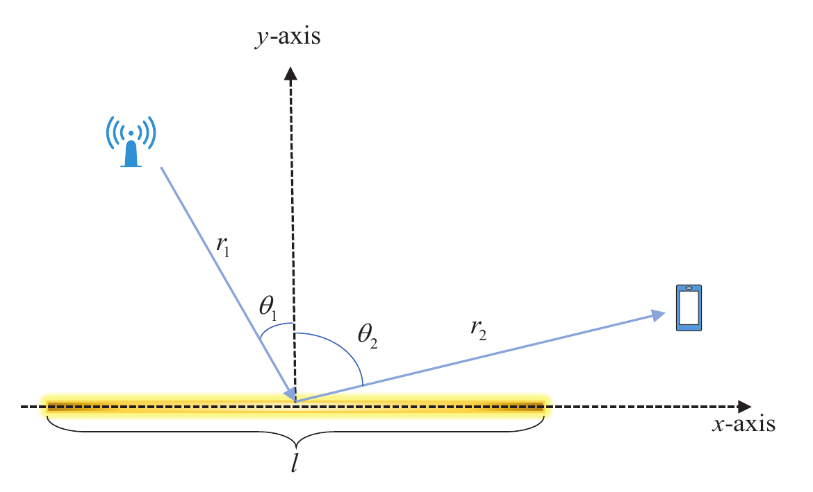
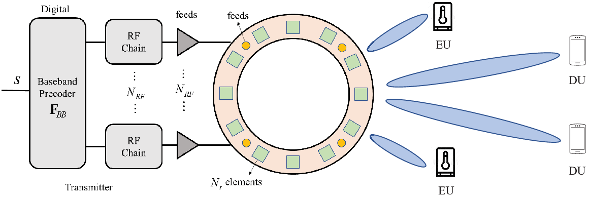
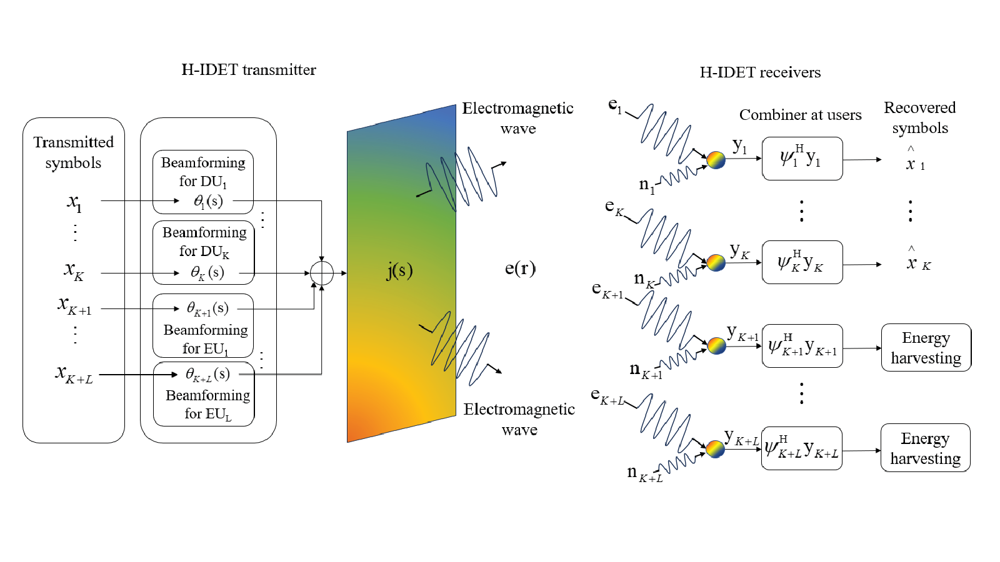

RIS
Intelligent Surfaces
Reconfigurable and specular reflecting surfaces for shaping wireless propagation, with beamforming and multicast transmission in conventional and terahertz bands.
I am a PhD student in Computer Science at City University of Hong Kong, supervised by Prof. Yuguang “Michael” Fang. My research focuses on wireless communications, reconfigurable intelligent surfaces (RIS), holographic MIMO, and near-field communications.
Before joining CityU in 2025, I received my master's degree in Information and Communication Engineering from the University of Electronic Science and Technology of China (UESTC) in 2025, and my bachelor's degree in Communication Engineering from Xidian University in 2022. At UESTC, I was supervised by Prof. Jie Hu and worked closely with Prof. Kun Yang in the Data and Energy Integrated Network Laboratory.
Open to collaboration. I enjoy exchanging ideas and working with researchers on wireless communications and intelligent networks. Feel free to get in touch.
Reconfigurable and specular reflecting surfaces for shaping wireless propagation, with beamforming and multicast transmission in conventional and terahertz bands.
Electromagnetic modeling and beamforming for continuous and circular holographic arrays, including spatial orthogonality and near-field energy focusing.
Integrated data and energy transfer through joint beamforming design, balancing communication performance and wireless energy-harvesting requirements.
Selected work on intelligent surfaces, wireless power, and holographic MIMO.

arXiv preprint arXiv:2608.15271
Analyzes the near- and far-field behavior of mechanically controlled specular reflecting surfaces, including channel gain, beamwidth, aperture size, and reflection angle.

IEEE Transactions on Wireless Communications
Studies circular holographic arrays for near-field data and energy multicast, using spatial orthogonality to design efficient beamformers under energy-harvesting requirements.
IEEE Transactions on Green Communications and Networking
Investigates intelligent reflecting surfaces for terahertz multicast systems that deliver wireless data and energy to multiple users.

IEEE Transactions on Wireless Communications
Optimizes the current distribution of a holographic surface to improve data rates while meeting wireless energy requirements, with near-field energy focusing and interference control.
IEEE Wireless Communications Letters
Studies beamforming for multicast transmission with an intelligent reflecting surface and a large antenna array in ultra-high-frequency bands.
City University of Hong Kong
Sichuan Province · Class of 2025
Ministry of Education of China
University of Electronic Science and Technology of China
University of Electronic Science and Technology of China
University of Electronic Science and Technology of China
Supervisor: Prof. Jie Hu · Collaborator: Prof. Kun Yang
Department of Computer Science
City University of Hong Kong
Tat Chee Avenue, Kowloon, Hong Kong SAR